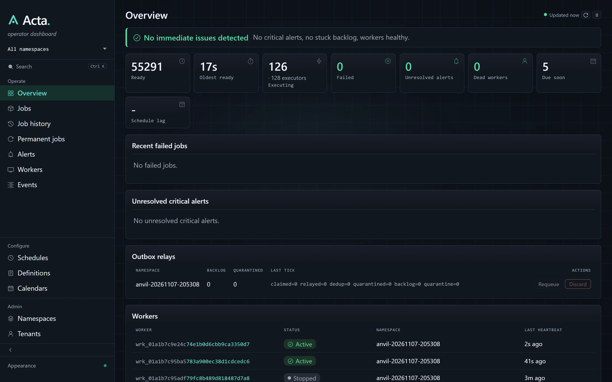
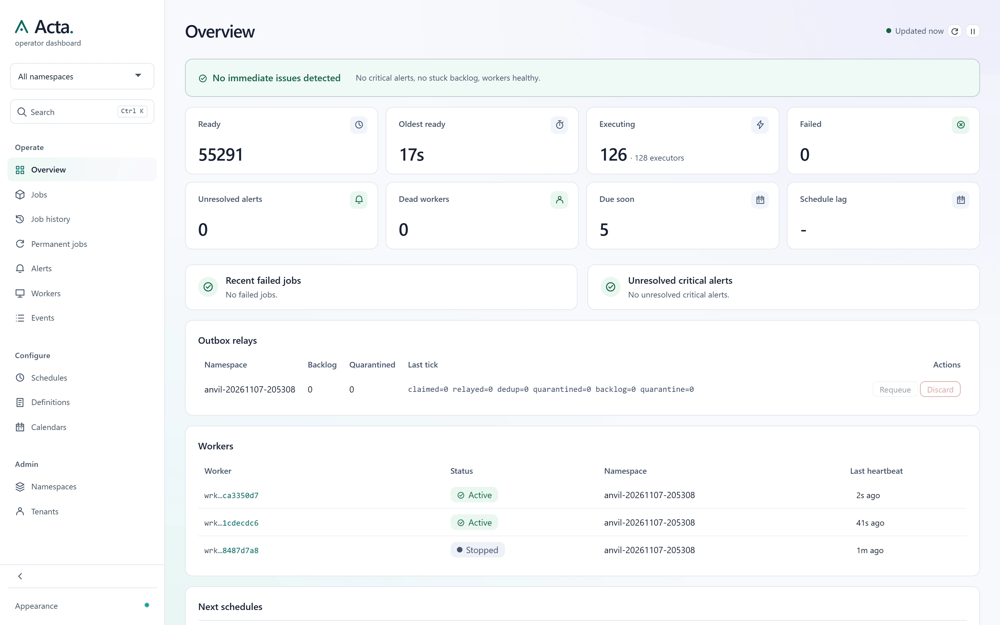

Your code. Your database. Durable by design.
Workflows and jobs
that survive restarts.
Everything is a job, and every job is a row.
Write workflows and jobs as plain C# handlers, and Acta keeps them as rows in the Postgres, SQL Server, or SQLite database you already run.
Apache-2.0 · .NET 10 · In your own database
[Job("process-order")]public async Task Process(…)- Recorded
book-shipmentConfirmed booking saved - Recorded
issue-invoiceAfter booking and payment - Retrying
send-receiptSame invoice, same delivery key
1.0.0-rc.11 Release & compatibility
- Release
- 1.0.0-rc.11, a release candidate
- Runs on
- .NET 10 with PostgreSQL 18, SQL Server 2019+, or SQLite 3.51+
- Upgrades
- rc.11 migrates an rc.10 database where it stands. An earlier candidate's needs a fresh one, and 1.0.0 may ask for a fresh one once more. From 1.0.0, every upgrade is a migration on the database you have. Stability status
acta, n. pl. · Latin: the things that have been done; the official record of proceedings.
Code that keeps its progress
Ordinary code.
Extraordinary staying power.
Four examples: a plain background job, order completion, recurring synchronization, and PDF approvals with parallel child jobs.
The smallest job is a method: an attribute, its input, and a cancellation token. One line enqueues it, and from that line on the job is a row you can read.
[Job("send-welcome-email")]
public Task Send(WelcomeEmail email, CancellationToken ct) =>
mail.SendWelcomeAsync(email.To, email.Name, ct);
// From a controller, a handler, anywhere in the app:
await jobs.EnqueueAsync(new WelcomeEmail(user.Email, user.Name));SELECT job_status, failure_count, next_run_at_utc
FROM acta.jobs_view
WHERE definition_name = 'send-welcome-email';- readyjob_statusRight after the enqueue. The row is there before any worker runs, with the input stored on it.
- executingjob_statusA worker claimed the job and holds a lease on it. If that worker stops, the lease lapses and another worker takes the job.
- succeededjob_statusThe method returned. The row stays as the record of what ran.
- readyfailure_count 1The send threw instead. The row is ready again, and next_run_at_utc says when it is tried, after a backoff, up to the job's MaxAttempts.
At least once. A retry or a takeover runs the method again, so make the send safe to repeat: give the mail provider a key it deduplicates on.
Book a shipment, confirm payment, issue the invoice, then send its receipt. Each operation waits for the one it depends on. An unconfirmed booking stops the job before charging or invoicing.
[Job("process-order")]
public async Task Process(Order order, JobContext ctx, CancellationToken ct)
{
var booking = await ctx.RunStepAsync("book-shipment",
c => shipping.BookAsync(order.Id, $"booking:{order.Id}", c), ct);
if (!booking.Confirmed)
{
await ctx.FailAsync("Shipment booking was rejected", ct);
return;
}
var charge = await ctx.RunStepAsync("charge-card",
c => payments.ChargeConfirmedAsync(order, $"payment:{order.Id}", c), ct);
var invoice = await ctx.RunStepAsync("issue-invoice",
c => invoices.IssueAsync(order.Id, booking.Id, charge.Id,
$"invoice:{order.Id}", c), ct);
await ctx.RunStepAsync("send-receipt",
c => mail.ReceiptAsync(invoice.Id, $"receipt:{invoice.Id}", c), ct);
}- book-shipmentsteps_viewRecords the booking outcome. A rejected booking ends the job; charging, invoicing, and receipt delivery cannot run.
- charge-cardsteps_viewRuns after booking is confirmed. The payment adapter returns only a confirmed charge; a decline or transient error throws, so no invoice is issued.
- issue-invoicesteps_viewReceives both the confirmed booking ID and charge ID. On replay, completed steps return their saved results.
- send-receiptsteps_viewStarts only after the invoice exists. The stable invoice ID gives receipt delivery the same deduplication key on every retry.
Application contract. This example starts with a validated order whose stock is already reserved. Each external adapter must honor its operation key. The payment adapter must throw unless a charge is confirmed. Booking cancellation, stock release, and refunds need explicit business recovery paths when an order cannot finish; Acta does not roll back external operations.
One job keeps a local copy of a web shop's orders current: each firing reads where the last one stopped, applies the next batch, and writes the new position back.
[Job("sync-orders")]
[Schedule("every-5s", "PT5S")]
public async Task Sync(JobContext ctx, CancellationToken ct)
{
var watermark = await ctx.GetVariableOrDefaultAsync("watermark", 0L, ct);
var changes = await shop.ChangesAfterAsync(watermark, 40, ct);
if (changes.Count == 0) return; // up to date until the next firing
await store.ApplyAsync(changes, ct); // an upsert: a replay lands once
await ctx.SetVariableAsync("watermark", changes[^1].ChangeId, ct);
}- sync-ordersjobs_viewOne permanent job that the schedule fires again and again, Idle between firings.
- every-5sschedules_viewThe schedule and its next occurrence, which you can pause, resume, or trigger now.
- watermarkcheckpoints_viewA variable that outlives the firing, the retry, and the worker.
Stop the worker mid-batch, with a deploy or a kill, and the next one picks the job up at the same watermark; a replayed batch is an upsert, so it lands once.
Build a manuscript's proof PDF and check its references in parallel child jobs. Request review, wait for author and editor approvals of that exact proof, then publish it.
[Job("publish-manuscript")]
public async Task Publish(
Manuscript manuscript, JobContext ctx, CancellationToken ct)
{
var proofId = await ctx.GetOrSetVariableAsync(
"proof-id", Guid.NewGuid, ct);
var prepared = await ctx.ParallelAsync("prepare", p => p
.Child("pdf", new BuildProofPdf(manuscript.RevisionKey, proofId))
.Child("references", new CheckReferences(manuscript.RevisionKey)),
ct);
prepared.ThrowIfAnyFailed();
await ctx.RunStepAsync("request-review",
c => proofs.RequestReviewAsync(proofId, c), ct);
foreach (var role in new[] { "author", "editor" })
{
var approval = await ctx.WaitSignalAsync<ProofApproval>(
$"{role}-approval", TimeSpan.FromDays(14), ct);
if (approval is not { Approved: true } || approval.ProofId != proofId)
{
await ctx.CancelAsync("This proof was not approved", ct);
return;
}
}
await ctx.RunStepAsync("publish",
c => proofs.PublishAsync(proofId, c), ct);
}- proof-idvariableCreated once and stored for this job. Every retry, child job, approval request, and publication uses the same proof identity.
- prepareparallel childrenBoth children read the same immutable manuscript revision independently. PDF creation and reference validation must both succeed before review is requested.
- request-reviewstepCreates the review request after preparation completes. Its operation key is the proof ID, so replay cannot create a second request.
- author / editorsignal waitsEach reviewer has 14 days from when their wait first begins. The stored deadline survives retries and restarts. The job releases its worker while waiting; a timed-out wait cancels the job and prevents publication. Both approvals must name this proof ID.
- publishstepPublishes the exact stored PDF that was approved. The publishing adapter must be idempotent by proof ID.
Application contract. One job handles one immutable manuscript revision. ProofApproval carries ProofId and Approved. The PDF child stores a complete, immutable artifact before succeeding; the reference checker fails its child job if validation does not pass. Corrections start a new proof workflow. Review and publication adapters must deduplicate by proof ID. The 14-day timeout is an illustrative policy for each reviewer separately, not one deadline for the whole approval process.
Capabilities
Everything your workflows and jobs need.
Every item links to its explanation on the capabilities page.
Retries, failure, and recovery
- Retries with a backoff you declare
- Execution timeouts and deadlines
- Leases and heartbeats
- Distributed, leaderless workers
- Crash recovery with no leader
- A slow database never grows memory
- Rolling deploys and rollbacks
- Restart with the stored input
- Explain a stuck or failed job
- A full alerting system for jobs
Engineering quality
- Postgres, SQL Server, SQLite
- Plain database drivers, no ORM
- A small data model, frozen from 1.0
- Performance, measured
- Source-generated dispatch, Native AOT
- Build-time diagnostics
- Startup checks that fail fast
- Fast, deterministic tests
- One conformance suite, three providers
- Chaos-tested by the project
- Schema scripts for a DBA
- Apache-2.0, all of it
The dashboard
A built-in dashboard shows what every job is doing.
It runs inside your app and reads the same rows you can query yourself.


Numbers
What one PostgreSQL rig measured.
One rig, 32 logical cores and NVMe, under Acta Verify: a measurement for rough sizing, not a promise for yours.
Explore Acta
A closer look, at your own pace.
Start building
Build it with your coding agent.
Paste one of these into Claude Code or Codex. The agent reads useacta.net/llms.txt and builds the app.
Read https://useacta.net/llms.txt, then build an Acta pizza shop on SQLite: POST /orders bakes each pizza in a 30-second durable sleep that survives restarting the app mid-bake. Enqueue one order and keep its job ref, restart the app during the bake, and show me that same ref finishing: its jobs explain output, its events, and the dashboard URL.
Read https://useacta.net/llms.txt, then build an Acta app on SQLite that shows a new joke every 10 seconds, fails every fifth time and retries after a second so I can watch the retries. Show me one job's ref and its jobs explain output after a retry, and the dashboard URL.
Read https://useacta.net/llms.txt, then add Acta to this app on the database it already uses, move one slow endpoint into a durable job with retries, and tell me which one you picked. Run it once and show me its job ref, its jobs explain output, and its rows.
dotnet add package Acta.Sqlite --prerelease
dotnet add package Acta.Postgres --prerelease
dotnet add package Acta.SqlServer --prerelease
Add Acta.Dashboard for the dashboard.